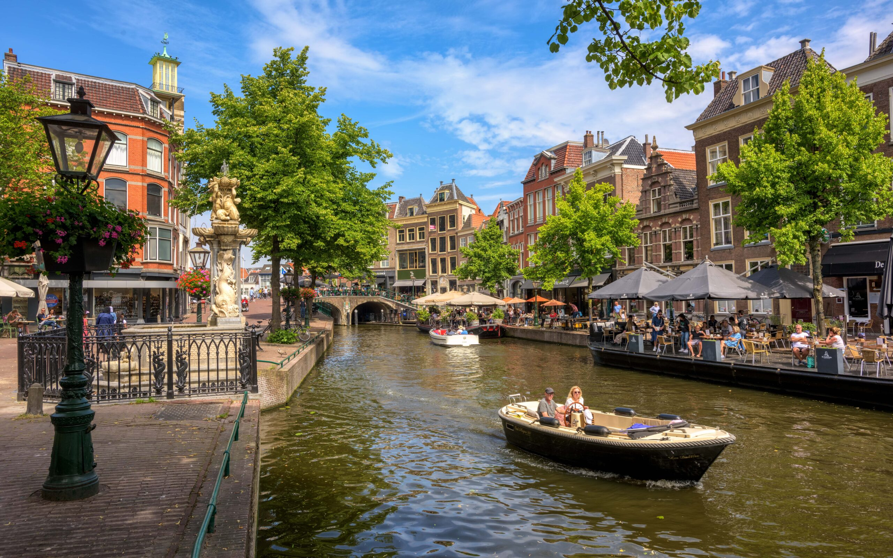
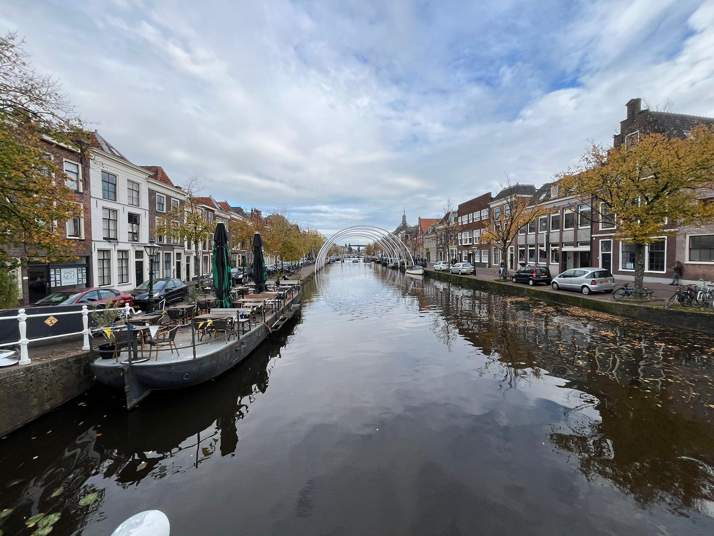

Nieuwe Rijn Canal
The Nieuwe Rijn canal in Leiden is one of the city's most vibrant and picturesque waterways, flowing through the bustling heart of the city. It is a central hub of activity, especially during market days, when stalls line the canal’s edges, selling everything from fresh produce to local crafts. The canal is flanked by historic houses and quaint bridges, offering visitors stunning views of the city’s architecture and lively atmosphere. Alongside its historical charm, the Nieuwe Rijn is also a popular spot for boat tours, allowing visitors to experience the beauty of Leiden from the water. Its lively market scenes, scenic walkways, and cultural importance make the Nieuwe Rijn a key landmark in Leiden’s historic and modern landscape.
Rapneburg Canal

The Rapenburg Canal in Leiden is one of the most beautiful and prestigious streets in the Netherlands, renowned for its historical significance and elegant surroundings. Dating back to the 17th century, this canal is lined with stately houses, many of which once belonged to wealthy merchants, scholars, and prominent families. The canal has long been associated with the University of Leiden, with several university buildings, including the Academy Building, located along its banks. Famous residents such as philosopher René Descartes and physician Herman Boerhaave have lived on Rapenburg, adding to its intellectual legacy. The tree-lined waterway is also home to bridges and monuments, creating a picturesque setting for leisurely strolls or boat rides. The Rapenburg’s rich history and timeless charm make it one of Leiden’s most iconic and admired locations.
Oude Singel
The Oude Singel is one of Leiden's most notable and historic canals, forming part of the old city’s defensive ring. Originally constructed as part of the city’s fortifications, it encircles the medieval center and offers a scenic, tranquil environment lined with stately 17th-century houses and historic warehouses. The canal is known for its wide, tree-lined banks, which create a picturesque setting perfect for leisurely strolls. Key landmarks along the Oude Singel include the Molen de Valk windmill and the historic Pesthuis. The combination of its rich history, serene atmosphere, and architectural beauty makes the Oude Singel a beloved spot for both locals and visitors, capturing the essence of Leiden's charm.